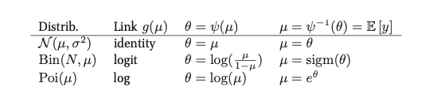

Generalized linear models¶
Models in which the output density is in the exponential family and in which the mean parameters are a linear combination of the inputs passed through a possibly nonlinear function.
Let us define an unconditional distribution fo a scalar response variable:
\(\sigma^2\) is the dispersion parameter (ofthen set to 1)
\(\theta\) the natural parameter
\(A\) is the log partition function
\(c\) is a normalization content
To get from the mean to the natural parameter we need a converting function \(\psi\), hence \(\theta = \Psi(\mu)\). In general the from of this function uniquely determines the form of the exponential faimly distribution. This function is invertible hence \(\mu = \Psi^{-1}(\theta)\). And since the derivative of the log partition function gives us the mean we get: \(\mu = \Psi^{-1}(\theta) = A'(\theta)\).
Now if we add inputs/covariates, and define a linear function:
Now we make the mean of the distriubtion some invertible monotonic function of this linear combination. This function is known as the mean function and is denoted as \(g^{-1}\):
\(g\) is also called the link function hence \(g^{-1}\) is sometimes called the inverse link function. And we can choose any function to be g but it has to be invertible. If \(g = \psi\) than we call it the canonical link function
If \(\theta_i = \eta_i = w^Tx_i\) into our uncoditional distribution we get: $\(p(y_i| \theta, \sigma^2) = \exp [\frac{y_i w^tx_i - A(w^Tx_i)}{\sigma^2} + c (y_i, \sigma^2)]\)$
The following talbes gives us an list of some distributions and their canonical link functions.

Examples¶
Linear regression:¶
\(y_i \in R\)
\(\theta_i = \mu_i = w^Tx_i\)
\(A(\theta) = \theta^2/2\)
\(E[y_i] = \mu_i\)
\(var(y_i) = \sigma^2\)
Binomial regression¶
\(y_i \in \{0, 1, \cdots, N_i \}\)
\(\pi_i = sigm(w^Tx_i)\)
\(\theta_i = \log(\pi_i / (1 - \pi_i)) = w^Tx_i\)
\(\sigma^2 = 1\)
\(A(\theta) = N_i \log (1+ e^{\theta})\)
\(E[y_i] = N_i \pi_i\)
\(var[y_i] = N_i \pi_i(1 - \pi_i)\)
Poison regression¶
\(y_i \in \{0,1,2, \cdots \}\)
\(\mu_i = \exp (w^Tx_i)\)
\(\theta_i = \log(\mu) = w^Tx_i\)
\(\sigma^2 = 1\)
\(A(\theta) = e^{\theta}\)
\(E[y_i] = var[y_i] = \mu_i\)
MLE and MAP estimation¶
An appealing properties of GLM is that they can be fit using exactly the same methods that we used to fit logistic regression.
Bayesian inference¶
In general we use MCMC